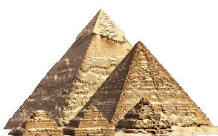
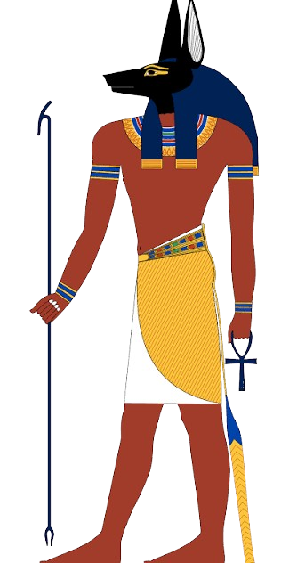

Egyptian mythology encompasses the polytheistic beliefs and myths of Ancient Egypt, centering on the creation of the world, the cycles of the Nile River, and the afterlife. Although known as Egyptian mythology, it was not practiced solely in Egypt; through military conquest, trade, and diplomacy, its beliefs and deities (such as Isis, Osiris, and Ra) were adopted, adapted, or exerted strong influence on regions such as Nubia (present-day Sudan), the Achaemenid Empire, Greece, Rome, and the Ancient Near East.
Origin
The story of the universe's origin in Egyptian mythology has different versions depending on the region; the main myths are those of Heliopolis and Memphis.
Heliopolitan Myth: The universe is said to have emerged from an infinite, primordial
ocean called Nun, which represented chaos; however, creation began when the god Ra (or Atum) emerged
from the waters of Nun onto a primordial mound. Through thought and the spoken word, he created Shu
(air) and Tefnut (moisture). From them were born Geb (earth) and Nut (sky), who were separated to make
way for the world.
Memphite Myth: regarded the god Ptah as the creative mind. He is said to have conceived
the universe in his heart and created it by pronouncing the names of the gods and beings.
Regardless of the specific myth, both versions regard Nun as the starting point of everything—an ocean
in the Heliopolis myth, and a manifestation of Ptah's physical power in the Memphis myth.
Gods

The Egyptians had more than 2,000 deities who controlled nature and daily life. These gods frequently
took on hybrid human-animal forms (zoomorphism), and their pharaohs (rulers) were considered
reincarnations of these gods.
Ra/Atum: sun god and creator of the universe
Osiris: god of vegetation, agriculture, and, subsequently, judgment and the
afterlife.
Iris: goddess of magic, motherhood, and fertility
Horus: god of the heavens and of war, he personified the pharaoh himself in life.
Anubis: god of mummification and the dead, he protected tombs and guided souls in the
afterlife.
Seth/Set: god of chaos, storms, the desert, and violence.
Amon: patron god of the city of Thebes. Later, he merged with Ra to become Amon-Ra, the
principal god of the New Kingdom.
Maat: goddess of justice, truth, and cosmic harmony. Her feather was used in the Court
of Osiris to weigh the hearts of the dead.
How this reaches us
The journey of Egyptian mythology into pop culture began in antiquity, when Greek historians like Herodotus traveled to Egypt, recording and assimilating these figures into their own classical literature. Later, 19th-century expeditions sparked a true "Egyptomania" in the West, influencing architecture, fashion, and art. In the 20th century, horror and adventure cinema immortalized the fascination with tombs and curses, spawning successful franchises centered on the classic figure of the mummy.
Examples of famous works that use this mythology as a reference are Pokémon, Dragon Ball, Harry Potter, Yu-Gi-Oh!, Black Panther, The Lion King, etc.